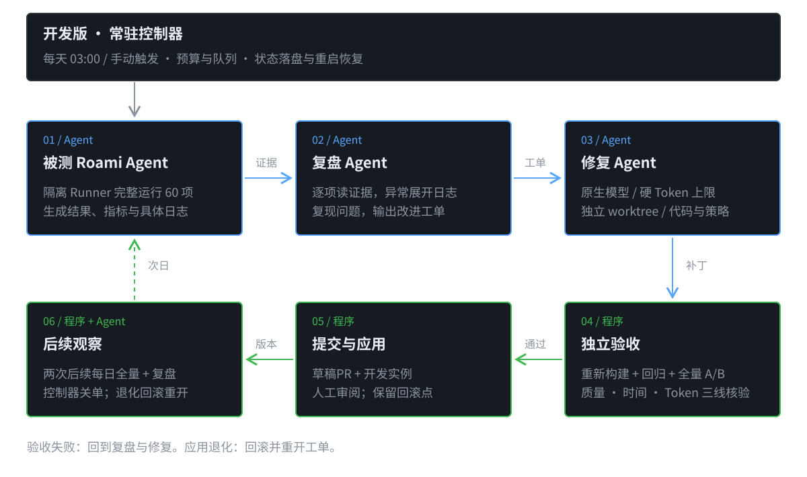

Roami Agent RSI
每天自己测试、观察、修改，让质量更好、交付更快、Token 更少。
仅开发版启动控制器；普通安装版不运行RSI。60项合同已齐；独立产物评分已接线，已登记本机容器runner；校准及日预算未齐，日程尚未启用。
架构：程序管流程，Agent 做判断与修改

执行手段：谁来做，怎么落地
| 环节 / 负责者 | 执行方式 | 交付物 |
|---|---|---|
| 发起 / 控制器 | 开发版服务内置定时器，每天03:00（上海时间）按日期幂等入队；重启只补当天，先检查机器与日预算。 | 冻结的评测计划 |
| 做题 / 被测 Agent | Runner驱动Main与Native Worker，完整跑60项；程序算分并扫描全部日志。 | 产物、指标、日志 |
| 复盘 / 复盘 Agent | 默认使用 Roami 主模型。逐项看证据，异常展开原日志，申请最小复现。 | 证据、原因假设、改法 |
| 修改 / 修复 Agent | 持久队列派发原生修复 Agent，在独立 worktree 生成并校验补丁，模型调用受硬 Token 上限约束。 | 真实补丁与变更说明 |
| 验收 / 独立服务 | 重建候选、回归原问题、完整60项同机A/B；正式晋级需满足私有验证门槛。 | 独立通过或拒绝报告 |
| 提交 / 交付程序 | 独立验收通过后，按配置运行quick/full；推送专用分支、自动提草稿PR并附验收截图。断线先查询对账，结果未知不重复创建。 | 可审阅补丁与草稿PR |
| 应用 / 发布程序 | 仅应用到开发评测实例；普通用户通过正常版本升级获得改进，不在本机自测试或自修改。 | 版本、回滚点、观察记录 |
闭环：工单贯穿，不止于出分
验收通过
应用版本，经过两次后续每日全量与复盘，控制器才关单。
验收失败 / 应用退化
失败回到诊断；退化回滚并重开。同一问题追加证据，不重复建单。
服务中断 / 预算不足
状态和下一步落盘，恢复后对账续跑；不足则等待，不能少跑题冒充完成。
每天出分先建内部问题单，不是直接提PR。配置GitHub交付后，修复且独立验收通过才自动提草稿PR；合并由人审阅。开发评测实例继续观察，两个后续完整日通过才关单，退化则回滚重开。
首版怎么启动
| 一次性配置 | 每天自动执行 | 需要人处理 |
|---|---|---|
| 开发版、机器、60项套件、模型、评分校准、日预算；源码允许范围与GitHub目标 | 03:00全跑 → 出分/日志复盘 → 内部问题单 → 隔离修改 → 独立复测 → 草稿PR → 开发实例观察 | 审阅合并PR；模型鉴权、未知写入或校准缺失等明确阻塞 |
控制器是程序，不需要你每天发消息或人工点运行。普通安装版不会启动任何一环。当前尚未开启真实每日运行；配置未齐时显示阻塞，不伪报完成。
运行成本与接入细节
- 用户故事：关闭聊天后，仍能看到每日结果、待修问题、补丁和下一步。
- 首次配置：机器、60项套件、模型、预算、源码仓库、私有验证集和应用范围；自动PR另配置目标仓库、分支和本机gh登录。之后不依赖聊天窗口；用户只处理明确阻塞。
- 实际成本：无版本差异时完整60项只跑一次；参数候选或源码对照时为60项×2组=120次。默认关闭参数搜索。每台配置机器各跑整套，多机不自动分片；修复、复盘和额外验证都共用日预算。
- 省Token：20项机制回归优先不用模型；规则全量扫描，模型逐项看摘要与索引、异常再展开原日志。规则覆盖和语义回顾分别记账，出分、用量完整和全部语义回顾齐全，才记日终完成。缺日志或未知用量不准晋级。
- 工作边界：每天全60项不轮换；新想法只做额外开发实验。开发侧不读取隐藏题答案或受保护轨迹；评分标准、权限与隐藏集不交给修复者修改。
- 接入顺序：已接入持久工单、语义复盘、隔离源码补丁、代码版本A/B与评测实例绑定；普通安装版不创建RSI服务、接口、账本或策略绑定；旧启用设置也不生效。
- 模块：EvaluationWorker → ResearchWorkflow / ResearchWorker → behavior_observer → source_revision → candidate_checks → github_publication（可选）→ release_observation。
- 防止空转：默认一次只修一个问题，每个问题最多两次自动编码尝试；无新问题继续次日测试。原生修复走同一预算账本；Codex适配器尚无硬Token预算，未自动接入。